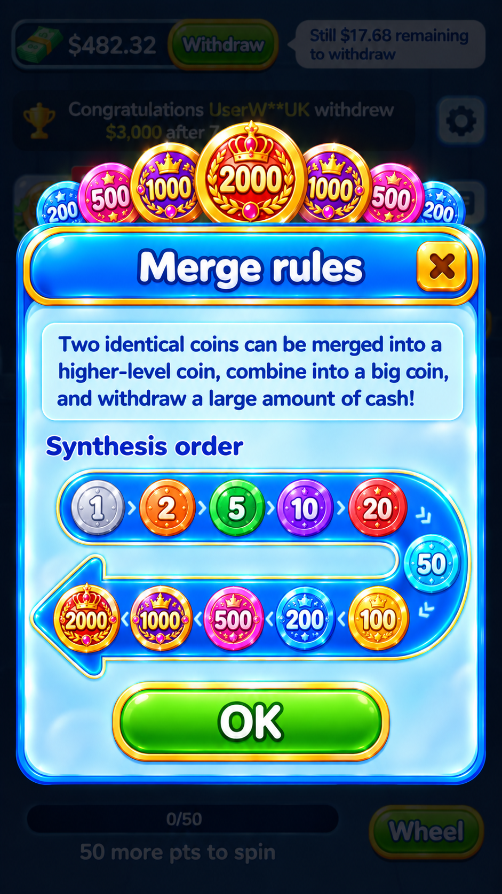
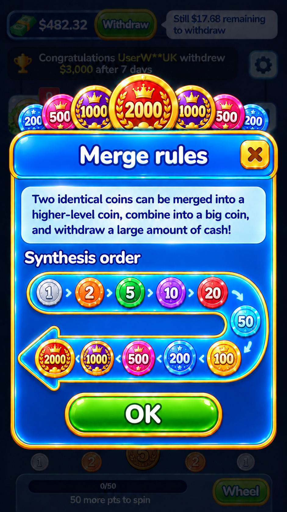

<!doctype html><html lang="zh-CN"><meta charset="utf-8"><meta name="viewport" content="width=device-width,initial-scale=1"><title>合成规则三方案存档</title><style>*{box-sizing:border-box}body{margin:0;background:#08172d;color:#eaf5ff;font:16px system-ui}main{max-width:1500px;margin:auto;padding:36px 24px}h1{font-size:32px}p{color:#b8cce6;line-height:1.8}a{color:#83d7ff}article{margin:30px 0;border:1px solid #315273;border-radius:20px;padding:22px;background:#10253e}h2{margin-top:0}.pair{display:grid;grid-template-columns:1fr 1fr;gap:20px}.pair img{display:block;width:100%;max-height:950px;object-fit:contain;border-radius:10px;background:#071225;cursor:zoom-in}figure{margin:0}figcaption{margin:0 0 12px;color:#d5e8ff}.grid{display:grid;grid-template-columns:repeat(auto-fit,minmax(260px,1fr));gap:18px}.grid img{width:100%;cursor:zoom-in;border-radius:12px}dialog{padding:16px;max-width:95vw;max-height:97vh;background:#08172d;border:1px solid #7091b4;border-radius:16px;color:white}dialog img{display:block;max-height:85vh;max-width:90vw;object-fit:contain}dialog::backdrop{background:#000e}button{background:#174b7d;color:white;border:1px solid #86b9ec;border-radius:8px;padding:8px 18px;font:inherit;margin-bottom:12px;cursor:pointer}@media(max-width:700px){.pair{grid-template-columns:1fr}}</style><main><h1>合成规则 · 三方案存档</h1><p>A 已由用户选定并替换到游戏；B、C 保留为设计存档。</p><p><a href="../RoundTwoApplied20260923/index.html">查看 Unity 替换结果</a></p><div class="grid"><article><h2>A · 浅蓝搪瓷 · 已应用</h2></article><article><h2>B · 冰蓝玻璃 · 未应用</h2></article><article><h2>C · 深蓝金属 · 未应用</h2></article></div><p><a href="prompts.json">生成提示词（内置 image_gen）</a></p></main><dialog id="viewer"><button onclick="this.parentNode.close()">关闭 ×</button></dialog><script>document.querySelectorAll('img').forEach(i=>i.onclick=()=>{document.querySelector('#full').src=i.src;document.querySelector('#viewer').showModal()});document.querySelector('#viewer').addEventListener('click',e=>{if(e.target===e.currentTarget)e.currentTarget.close()})</script></html>